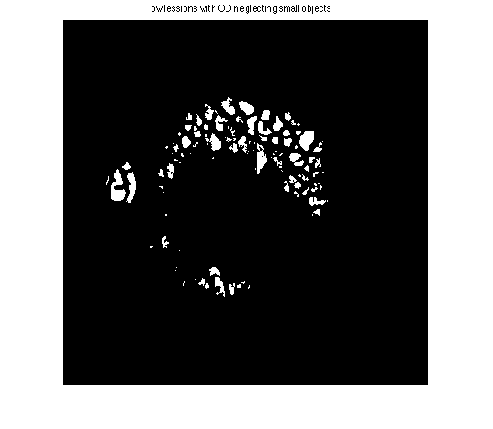

clear all
close all
warning off
clc
image=imread('2_test.tiff');
image=imresize(image,[400,400]);
image=im2uint8(image);
imwrite(image,'original.jpg','quality',50);
figure(1)
imshow(image);
title('orignal image')
drawnow
image_dummy=image;
image_dummy(:,:,2:3)=0;
figure(2)
subplot(2,2,1)
imshow(image_dummy)
title('extracted R');
image_dummy=image;
image_dummy(:,:,1)=0;
image_dummy(:,:,3)=0;
subplot(2,2,2)
imshow(image_dummy)
title('extracted G');
image_dummy=image;
image_dummy(:,:,1:2)=0;
subplot(2,2,3)
imshow(image_dummy)
title('extracted B');
image1=image(:,:,2);
image1=imresize(image1,[400,400]);
imwrite(image1,'green.jpg','quality',50);
[M,N] = size(image1);
sa = 2.0;
rt = mim(image1,sa);
[tt1,e1,cmtx] = myThreshold(rt);
ms = 45;
mk = msk(image1,ms);
rt2 = 255*ones(M,N);
for i=1:M
for j=1:N
if rt(i,j)>=tt1 & mk(i,j)==255
rt2(i,j)=0;
end
end
end
J = im2bw(rt2);
J= ~J;
[Label,Num] = bwlabel(J);
Lmtx = zeros(Num+1,1);
for i=1:M
for j=1:N
Lmtx(double(Label(i,j))+1) = Lmtx(double(Label(i,j))+1) + 1;
end
end
sLmtx = sort(Lmtx);
cp = 950;
for i=1:M
for j=1:N
if (Lmtx(double(Label(i,j)+1)) > cp) & (Lmtx(double(Label(i,j)+1)) ~= sLmtx(Num+1,1))
J(i,j) = 0;
else
J(i,j) = 1;
end
end
end
for i=1:M
for j=1:N
if mk(i,j)==0
J(i,j)=1;
end
end
end
figure; imshow(~J)
vessels=imresize(~J,[400,400]);
imwrite(~J,'vessel.jpg','quality',50)
vessel=im2uint8(vessels);
bw = bwareaopen(vessel,10);
image2=imresize(image1,[400,400]);
image4=im2bw(image1);
b=imsubtract(image4,bw);
c=imresize(b,[400,400]);
imwrite(c,'subtract.jpg','quality',50);
figure(5);
imshow(c);
title('bw lessions with OD neglecting small objects');
se=strel('disk',4);
a=imdilate(c,se);
figure(6);
d=imresize(a,[400,400]);
d=im2uint8(d);
imwrite(d,'dilate.jpg','quality',50);
imshow(d);
title('joining close objects together');
[lab num]=bwlabel(d);
areas=[];
for i=1:num
dummy=lab==i;
[r c]=find(dummy==1);
areas(i,1)=i;
areas(i,2)=round(mean(r));
areas(i,3)=round(mean(c));
end
areas=sortrows(areas,3);
od_loco=[areas(1,2) areas(1,3)];
image_od_c=image;
image_od_c(od_loco(1)-2:od_loco(1),:,1:2)=0;
image_od_c(od_loco(1)-2:od_loco(1),:,3)=255;
image_od_c(:,od_loco(2)-2:od_loco(2),1:2)=0;
image_od_c(:,od_loco(2)-2:od_loco(2),3)=255;
figure(7)
image_od_c=imresize(image_od_c,[400,400]);
imwrite(image_od_c,'OD.jpg','quality',50);
imshow(image_od_c)
title('OD position located');
od_bw=lab==areas(1,1);
d = uint8(d);
image_od=d.* uint8(od_bw);
imwrite(image_od,'OD1.jpg','quality',50);
figure(8)
imshow(image_od);
title('extracted OD bw');
image_od=im2uint8(image_od);
image_od1=imresize(image_od,[400,400]);
d=imresize(d,[400,400]);
e=imsubtract(d,image_od1);
figure(9);
h=imresize(e,[400,400]);
imwrite(h,'lesions.jpg','quality',50);
imshow(h);
title('neglected OD for G image')
lesions_bw=e & (~image_od1);
lesions_bw=imresize(lesions_bw,[400,400]);
image_f=imresize(image,[400,400]);
[r c]=find(lesions_bw==1);
for i=1:length(r)
image_f(r(i),c(i),1:2)=0;
image_f(r(i),c(i),3)=255;
end
figure(10)
imshow(image_f)
imwrite(image_f,'last.jpg','quality',50);
title('predicted lesions')
figure(11)
subplot(1,2,1)
imshow(image)
title('orignal image')
subplot(1,2,2)
imshow(image_f)
title('automated segmentation results of the image')
drawnow
